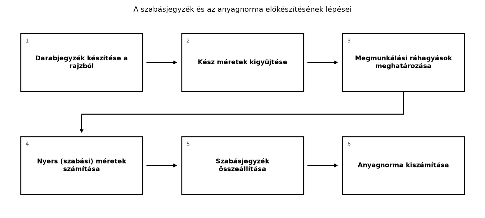

Egy asztalostanuló megrendelést kap: konyhaasztalt kell készítenie tömör fából, meghatározott méretek szerint. A művezető azt mondja: „Hozd ki a szabásjegyzéket, és rendeld meg az anyagot!” Ha a tanuló csak a kész méreteket adja meg, az asztal nem fog elkészülni, mert a fa megmunkálás közben veszít a méretéből. Ha viszont túl nagy ráhagyással rendel, felesleges anyagköltséget okoz. A szabásjegyzék a rajz és az anyagbeszerzés közötti híd: pontosan megmondja, hogy az egyes alkatrészeket milyen nyers méretben kell levágni, és összesen mennyi anyag szükséges. A szabásjegyzékből készül az anyagnorma, amely a megrendeléshez, a költségszámításhoz és a hulladék tervezéséhez kell.
Az alábbi folyamat mutatja, hogyan jutunk el a darabjegyzéktől a szabásjegyzéken át az anyagnormáig. A szabásjegyzék a rajz és a raktár közötti kapocs.

A gyakorlatban ez így működik: a műhelyrajz megmondja az alkatrész kész méretét. A fa azonban gyaluláskor, csiszoláskor és vágáskor anyagot veszít, a szélezett fűrészáru pedig zsugorodhat. Ezért nyers méretet kell rendelni, amely nagyobb, mint a kész méret. A szabásjegyzék oszlopaiban soronként rögzítjük az alkatrészt, a darabszámot, az anyagot, a kész és a nyers méretet, a szálirányt és az élzárási igényt. Az anyagnorma pedig az összes sor anyagszükségletét foglalja össze tömörfánál köbméterben, lapanyagnál négyzetméterben, élzárónál folyóméterben, vasalatból darabban.
Definíció. A kész méret a rajzon szereplő, a termék összeállítása utáni megmunkált, kész alkatrész mérete. A rajzon a méret mm-ben értendő, a mm mértékegységet nem írjuk ki. Sorrend: hossz × szélesség × vastagság.
Definíció. A tisztított méret az a méret, amelyet a megmunkálás közbenső fázisában, például gyalulás előtt kapunk. Sok műhely a tisztított méretet nem különbözteti meg, hanem közvetlenül a kész mérettel dolgozik; ha van, akkor a ráhagyások tervezésénél használjuk.
Definíció. A nyers (szabási) méret az a méret, amelyre a fűrészárut vagy a lapanyagot a szabásnál le kell vágni. Ez a kész méret és a megmunkálási ráhagyások összege.
Definíció. A megmunkálási ráhagyás a kész méret és a nyers méret közötti különbség, amely fedezi a gyalulási, csiszolási, vágási, zsugorodási és beigazítási méretveszteséget.
Szabály. A nyers méretet mindig úgy kell meghatározni, hogy az alkatrészt a megmunkálás során ismételten, méretre lehessen munkálni. A ráhagyás nagysága függ a fa fajtájától, a nedvességtartalomtól, a megmunkálás módjától, a gépektől és a kész felület minőségétől. Az itt megadott értékek tájékoztató jellegűek, a konkrét műhelyben a gyártástechnológus vagy a műhelygyakorlat határozza meg. (ellenőrizendő: a helyi technológiai előírások)
A ráhagyásokat három irányban adjuk meg. A hossz menti ráhagyás a darabolást és a bütü tisztázását, a szélességi ráhagyás az élellenőrzést és a szélezést, a vastagsági ráhagyás a vastagsági gyalulást fedezi. Tájékoztató értékek:
| Megmunkálás | Hosszráhagyás (mm) | Szélességi ráhagyás (mm) | Vastagsági ráhagyás (mm) |
|---|---|---|---|
| Kézi gyalulás, fűrészelés | 10–20 | 5–10 | 2–4 |
| Gépi egyengetés, vastagsági gyalulás | 10–15 | 5–8 | 2–3 |
| Lapszabás első fázisban (majd élzárás) | 5–10 | 5–10 | a lap vastagsága általában kész méret |
| Furnérozás utáni tisztázó vágás | 10–20 | 10–20 | a lap vastagsága + furnérok |
Ezek a számok csak kiindulópontok. Például egy erősen vetemedett, szélezetlen fűrészáruból sokkal többet kell elhadni, mint egy szélezett, szárított, osztályozott deszkából. A hosszráhagyás azért nagyobb, mert a bütü sokszor repedezett, és a végső méretre vágás után csiszolni is kell. A vastagsági ráhagyás a próbagyalulás után növelhető, ha a deszka görbe.
A szabásjegyzék a dokumentáció része, és a darabjegyzékből indul ki. A darabjegyzék a termék összes alkatrészét felsorolja kész mérettel, anyaggal és darabszámmal. A szabásjegyzék ettől annyiban több, hogy minden alkatrészhez megadja a nyers méretet, a szabáshoz szükséges adatokat, a szálirányt és az élzárási igényt, valamint az anyag besorolását. A javasolt oszlopok:
A szabásjegyzékben minden méret mm-ben szerepel; az anyagnormában viszont a tömör fát m³-ben, a lapanyagot m²-ben, az élzárót folyóméterben számoljuk. A mértékegységváltásnál mindig ellenőrizzük a nagyságrendet: 1 m³ = 1 000 000 000 mm³, tehát egy 1000 × 100 × 25 mm-es deszka térfogata 0,0025 m³, nem 2,5 m³.
Definíció. Az anyagnorma az adott termék egy darabjához szükséges összes anyag mennyiségét adja meg, beszerzésre, raktárra vagy kalkulációra bontva.
Definíció. A nettó (kész) anyagmennyiség az a mennyiség, amely a kész alkatrészekbe ténylegesen beépül: a kész méretekből számított térfogat, terület vagy folyóméter (). A nyers (szabási) mennyiség a nyers méretekből számított mennyiség (), amely a megmunkálási ráhagyásokat is tartalmazza. A bruttó szükséglet a nyers mennyiség és a vágási, illesztési, hibakiejtési veszteség (hulladék) együttes összege (): ennyit kell megvásárolni.
Definíció. Az anyagkihozatal a nettó (kész) anyagmennyiség és a bruttó szükséglet hányadosa, százalékban kifejezve:
Ahol az anyagkihozatali tényező, a tiszta, beépülő anyag, a megvásárolt vagy feldolgozandó anyag.
Összefüggés. A bruttó szükséglet a nyers mennyiségből és a hulladékszázalékból:
Ahol a hulladék- és vágási veszteség százaléka. Ha a ráhagyást külön nem számoljuk (, a a teljes veszteséget tartalmazza), a százalékos veszteség és az anyagkihozatal közötti kapcsolat:
Például ha a hulladékszázalék 20%, akkor az anyagkihozatal 83,3%. A hulladékszázalék a tömörfa szabásánál jellemzően 20–40%, lapanyagnál 5–15%, ha a lapszabás optimális, de a pontos érték a terméktől, az anyag minőségétől és a szabástérképtől függ. (ellenőrizendő: műszaki gyakorlat, szabásterv)
Tömörfa anyagnorma számítása. Minden alkatrész nyers méretéből kiszámoljuk a térfogatot köbméterben:
A méreteket méterre átváltva. Az összes azonos anyagú alkatrész térfogatát összegezzük, majd hozzáadjuk a hulladékszázalékot. Az így kapott bruttó mennyiséget a fűrészáru-kereskedésben m³-ben rendeljük.
Lapanyag anyagnorma számítása. A bútorlapokat, MDF-et, forgácslapot táblaméretben, általában 2800 × 2070 mm vagy 2800 × 1300 mm méretben, illetve a gyártó egyéb méreteiben vásároljuk. Az anyagnorma azt adja meg, hogy a szükséges alkatrészek hány táblányi lapot igényelnek. Ehhez először az alkatrészek nyers méretéből területet számolunk m²-ben, majd a táblaméret segítségével meghatározzuk a szükséges táblák számát. A hulladékszázalék a szabástervből, illetve a tábla méretéből adódó levágásokból származik. Ha nincs szabásterv, tájékoztató becslésként 10–20% hulladékot számolunk. (ellenőrizendő: szabásterv)
Élzáró anyagnorma. Az élzáró csíkot folyóméterben (fm) mérjük. Minden élzárást igénylő alkatrész élhosszát összeadjuk a kész (formatizált) méretből, mert az élzáró a kész méretű élre kerül. Az élzáró anyagmennyiség:
Ha csak bizonyos éleket zárunk le, akkor csak azokat. A kapott folyóméterhez általában 3–8% ráhagyást adunk az összeillesztések és a végek levágása miatt. (ellenőrizendő: élzárási technológia)
Vasalatok és szerelvények. A vasalatok anyagigénye darabszámban szerepel, közvetlenül a darabjegyzékből. A csavarokat gyakran kiszerelésben vagy tömegre rendelik; ilyenkor a darabszámból kiszámoljuk a dobozszámot.
Készítsünk szabásjegyzéket és anyagnormát egy keretszerkezetű, tömör bükk asztalhoz. A termék: 800 mm hosszú, 600 mm széles, 40 mm vastag asztallap, alatta 80 × 22 mm-es keretlécek (kávák), 60 × 60 mm-es lábak. A lábak külső széle 50 mm-rel van beljebb a lap szélénél (laptúllógás): a lábak külső távolsága hosszirányban mm, szélességben mm, a lábközi méret ennél 2 · 60 mm-rel kisebb: 580 mm, ill. 380 mm. A kávák kész hossza a lábközi méret + 2 · 25 mm csap: 630 mm, ill. 430 mm. A kész méreteket a darabjegyzék tartalmazza. Tételezzük fel, hogy a fűrészáru 12% nedvességtartalmú, szélezett, osztályozott; a hulladékszázalék 25% (tájékoztató érték, mert a görcsök és repedések miatt kiesés van). A megmunkálási ráhagyások: hosszra 15 mm, szélességre 8 mm, vastagságra 3 mm. A lábnál a vastagsági ráhagyás 4 mm (az anyag görbe lehet), a szélességi ráhagyás marad 8 mm.
A darabjegyzék kész méretekkel:
| Tétel | Megnevezés | Db | Anyag | Kész méret h × sz × v (mm) |
|---|---|---|---|---|
| A1 | Asztallap | 3 | bükk | 800 × 200 × 40 |
| A2 | Keretléc (káva) hosszú | 2 | bükk | 630 × 80 × 22 |
| A3 | Keretléc (káva) rövid | 2 | bükk | 430 × 80 × 22 |
| B1 | Láb | 4 | bükk | 720 × 60 × 60 |
(Megjegyzés: az asztallap három összeragasztott pallóból készül, ezért a darabjegyzékben 3 alkatrészt veszünk fel, mindegyik 200 mm széles, 40 mm vastag; ezeket szélesbítő toldással táblásítjuk.)
A szabásjegyzék a ráhagyásokkal:
| Tétel | Megnevezés | Db | Anyag | Kész méret (mm) | Nyers méret (mm) | Szálirány / élzárás | Megjegyzés |
|---|---|---|---|---|---|---|---|
| A1 | Asztallap palló | 3 | bükk | 800 × 200 × 40 | 815 × 208 × 43 | rost hosszirányban | táblásításra, szívoldal azonos irányba |
| A2 | Keretléc hosszú | 2 | bükk | 630 × 80 × 22 | 645 × 88 × 25 | rost hosszirányban | szél gyalulva |
| A3 | Keretléc rövid | 2 | bükk | 430 × 80 × 22 | 445 × 88 × 25 | rost hosszirányban | szél gyalulva |
| B1 | Láb | 4 | bükk | 720 × 60 × 60 | 735 × 68 × 64 | rost hosszirányban; nincs élzárás | szélességi ráhagyás 8 mm, vastagsági 4 mm |
A nyers méretek számítása például az A1 asztallapnál: - hossz: 800 + 15 = 815 mm - szélesség: 200 + 8 = 208 mm - vastagság: 40 + 3 = 43 mm
A nyers méret 815 × 208 × 43 mm.
Anyagnorma tömörfára (m³). Minden nyers méretet méterre váltunk, és kiszámoljuk a térfogatot:
Összes nyers (szabási) térfogat: .
A bruttó szükséglet a nyers térfogatra számított 25% hulladékkal:
A megrendelésnél tehát kb. 0,049 m³ bükk fűrészárut kell kérnünk. A beépülő kész anyag térfogata a kész méretekből:
Összes kész (nettó) térfogat: . Az anyagkihozatal a definíció szerint:
A különbség a ráhagyásokból és a hulladékból adódik. (A csak a ráhagyást mutató „szabási kihozatal” ; ezt ne keverd az anyagkihozatallal.)
A HTML-változatban a táblázat mezői (darabszám, kész méret, ráhagyás) és a hulladékszázalék szerkeszthetők; a kalkulátor lépésenként kiírja a kész, a nyers és a bruttó térfogatot és az anyagkihozatalt.
Egy kávás szekrény külső mérete 800 mm széles, 500 mm mély, 850 mm magas (lábazat nélkül), a hátfal 3 mm-es HDF. A szekrény 18 mm vastag, melaminbevonatú P2 forgácslapból készül, a látható éleken élzáró csíkkal. A lapanyag táblaméret 2800 × 2070 mm. A hulladékszázalék lapanyagnál 12% (tájékoztató becslés, szabásterv nélkül).
A szekrény darabjegyzéke kész méretekkel (hossz × szélesség × vastagság):
| Tétel | Megnevezés | Db | Kész méret (mm) | Anyag | Élzárás |
|---|---|---|---|---|---|
| L1 | Oldallap | 2 | 832 × 470 × 18 | P2 forgácslap | mind a 4 él |
| L2 | Fenéklap | 1 | 764 × 470 × 18 | P2 forgácslap | elülső él |
| L3 | Fedőlap | 1 | 800 × 500 × 18 | P2 forgácslap | mind a 4 él |
| L4 | Polc | 2 | 764 × 450 × 18 | P2 forgácslap | elülső él |
| L5 | Ajtó | 2 | 780 × 392 × 18 | P2 forgácslap | mind a 4 él |
| L6 | Hátlap | 1 | 830 × 796 × 3 | HDF | nincs élzárás |
(Az oldallap magassága: 850 − 18 = 832 mm, mert a fedőlap felül ül, a fenék az oldalak közé kerül; a fenék hossza 800 − 2 · 18 = 764 mm.) A hátlap más anyag (HDF), ezért külön sorban, külön anyagszükséglettel számoljuk, nem a forgácslap táblájából.
A lapszabásnál a lapokat formatizáló fűrészen jellemzően közvetlenül kész méretre szabjuk (ellenőrizendő: üzemi technológia); ráhagyást csak akkor adunk, ha a lapot utólag élmarással vagy furnérozás után munkáljuk készre. Ebben a példában a forgácslap-alkatrészeket 6 mm ráhagyással szabjuk, majd az élzárás előtt méretre vágjuk (formatizáljuk), így az élzáró a kész méretű élekre kerül. A HDF hátlapot csak méretre vágjuk, ráhagyás 5 mm. A szabásjegyzék nyers méretekkel és az élzáró hosszával (a kész méret éleiből):
| Tétel | Megnevezés | Db | Kész méret (mm) | Nyers méret (mm) | Élzárás (a kész méret éleiből) |
|---|---|---|---|---|---|
| L1 | Oldallap | 2 | 832 × 470 × 18 | 838 × 476 × 18 | 2 · (832 + 470) = 2604 mm / lap |
| L2 | Fenéklap | 1 | 764 × 470 × 18 | 770 × 476 × 18 | 764 mm |
| L3 | Fedőlap | 1 | 800 × 500 × 18 | 806 × 506 × 18 | 2 · (800 + 500) = 2600 mm |
| L4 | Polc | 2 | 764 × 450 × 18 | 770 × 456 × 18 | 764 mm / polc |
| L5 | Ajtó | 2 | 780 × 392 × 18 | 786 × 398 × 18 | 2 · (780 + 392) = 2344 mm / ajtó |
| L6 | Hátlap | 1 | 830 × 796 × 3 | 835 × 801 × 3 | nincs |
A forgácslap nettó (nyers) területe a nyers méretekből:
Összes forgácslap (nyers): .
A bruttó szükséglet 12% hulladékkal:
Egy tábla területe: . Ezért egyetlen forgácslap-tábla elég, mert . A szabásterv elkészítése után derül ki, hogy valóban kijön-e egy táblából; ha nem, akkor két táblát kell rendelni. Mivel egész táblát vásárolunk, a tényleges beszerzési mennyiség 5,796 m², a kalkulációnál ezt kell figyelembe venni.
A HDF hátlap külön sor: nyers , 12% hulladékkal 0,749 m²; HDF-ből a gyártó táblaméretétől (vagy darabra szabott méretétől) függően 1 tábla vagy kisebb vágott lap rendelhető (ellenőrizendő: gyártói kínálat).
Az élzáró hossza a kész (formatizált) méret éleiből, élenként a gép szerinti túlnyúlással (itt 2 · 20 mm élenként, tájékoztató, ellenőrizendő: élzárógép gépkönyve):
Összesen: 14 788 mm. Az élzárt élek száma 2 · 4 + 1 + 4 + 2 + 2 · 4 = 23, a túlnyúlás 23 · 40 = 920 mm. Az élzáró szükséglete 14 788 + 920 = 15 708 mm ≈ 15,71 fm, kerekítve 16 fm. Az élzáró vastagsága a lapvastagsághoz igazodik. A vasalatok darabszáma a szerelvényjegyzékből: zsanér 4 db, polctartó 8 db, összekötő csavar 4 db.
Recept. A szabásjegyzék és az anyagnorma elkészítésének általános rendje:
A szabásjegyzék akkor jó, ha minden alkatrészt tartalmaz, a méretek és a darabszámok megegyeznek a rajzzal, a nyers méret valóban lehetővé teszi a megmunkálást, és a szálirány, élzárás jelölése egyértelmű. Az anyagnorma akkor jó, ha a mértékegységek helyesek, a nettó összegek pontosak, a hulladékszázalék indokolt, és a végeredmény nagyságrendileg hihető. Ellenőrzésnél minden számítást kétszer, lehetőleg más úton is elvégzünk: például a tömörfa térfogatot az összes kész alkatrész méretéből is kiszámoljuk, és a ráhagyásokkal összevetjük. Ha a szabásjegyzékben hibás darabszám van, anyaghiány vagy felesleges hulladék keletkezik.
Hiba. A szabásjegyzék a kész méretet adja meg nyers méretként, ráhagyás nélkül. Ok. A tanuló azt gondolja, hogy a fa mérete nem változik a megmunkálás során. Javítás. Minden irányban adjunk meg ráhagyást, és a nyers méretet is tüntessük fel.
Hiba. A tömörfa térfogatot rossz mértékegységgel számolják, például mm³-ben hagyják és m³-nek tekintik. Ok. Az átváltás elmarad. Javítás. A számolás során írjuk ki a mértékegységeket, és ellenőrizzük: 1 000 × 100 × 25 mm = 2 500 000 mm³ = 0,0025 m³.
Hiba. A hulladékszázalékot a nyers anyagmennyiségből vonják le, nem hozzáadják. Ok. A nyers és bruttó fogalmak felcserélése. Javítás. A bruttó mindig nagyobb, mint a nyers (és a kész); a hulladék a nyers mennyiségre rakódik rá.
Hiba. Az élzáró hosszához nem adnak túlnyúlást vagy ráhagyást, ezért kevés lesz. Ok. Csak a kész méret éleit mérik össze, a gép szerinti túlnyúlást és a hulladékot nem. Javítás. Az élzáró hosszát a kész (formatizált) méret éleiből számoljuk, és élenként a gép szerinti túlnyúlást (pl. 2 · 20 mm) vagy 5–10% ráhagyást adunk hozzá (tájékoztató, ellenőrizendő).
Egy kis asztalosműhelyben egy asztalos elkészítette a szabásjegyzéket egy tölgyfa könyvespolchoz, de a lábaknál elfelejtette a vastagsági ráhagyást. A fűrészárut 52 × 52 mm-re rendelte (2 mm ráhagyás), a láb kész mérete 50 × 50 mm lett volna. Az anyag görbesége miatt az egyengetés után csak 47 × 47 mm-es, egyenes lábat lehetett kigyalulni, ami kisebb a rajzi méretnél: a csaplyuk falai elvékonyodtak, a lábakat újra kellett gyártani. A tanulság: a ráhagyásokat mindig a legrosszabb, még kezelhető anyagra kell méretezni, különben a gyártásban anyaghiány lesz. (ellenőrizendő: a példa fiktív, tanulási célú)
1. feladat (A) Határozd meg a nyers méretet, ha a kész méret 600 × 300 × 22 mm, a hosszráhagyás 12 mm, a szélességi 7 mm, a vastagsági 3 mm.
2. feladat (A) Egy tömörfa polc nyers anyagmennyisége (a ráhagyással együtt) 0,010 m³, a kész térfogat is ennyinek tekintendő. A hulladékszázalék 25%. Mennyi a bruttó szükséglet és az anyagkihozatal?
3. feladat (B) Egy forgácslapból készülő ajtó kész mérete 496 × 396 × 18 mm. A lap szabásánál hosszra és szélességre 6 mm ráhagyást adunk. Az élzáró a formatizált, kész méretű lapra kerül. Mennyi élzáró szükséges, ha mind a 4 él le van zárva, és 5% ráhagyást számolunk?
4. feladat (B) Készíts szabásjegyzék-sort a következő alkatrészhez: tölgy asztallap, kész méret 1000 × 500 × 30 mm, 2 db, szálirány hosszban, nincs élzárás. A ráhagyások: hossz 15 mm, szélesség 8 mm, vastagság 3 mm. Írd be a megfelelő oszlopokba.
5. feladat (C) Egy konyhaszekrény oldallapja 720 mm magas, 560 mm mély, 18 mm vastag melaminlapból készül. A lapszabásnál 6 mm ráhagyás van hosszra és szélességre. A látható éleken élzáró szükséges. Mennyi élzáró kell a két oldallaphoz, ha az egyik hosszú és a két rövid él záródik le (a bütü nem látható)? Adjuk meg a nyers méreteket, és az élzáró hosszát a kész méretből 5% ráhagyással.
6. feladat (D) Készíts anyagnorma táblázatot (mintaárral) a fenti keretszerkezetű asztalhoz. A bükk fűrészáru egységára 320 000 Ft/m³, az élzáró nem kell, csavarok és ragasztó becsült költsége 2 500 Ft, csiszolópapír 800 Ft. Az árak mintaárak. A táblázat oszlopai: Anyag, Mennyiség, Egység, Egységár (Ft/egység), Érték (Ft). A munkabérrel nem számolunk, csak anyagköltség.
1. feladat
Nyers hossz = 600 + 12 = 612 mm; nyers szélesség = 300 + 7 = 307 mm;
nyers vastagság = 22 + 3 = 25 mm. A nyers méret: 612 × 307 × 25 mm.
2. feladat
Bruttó = 0,010 · (1 + 0,25) = 0,0125 m³.
Anyagkihozatal = (0,010 / 0,0125) · 100% = 80%.
3. feladat
Az élzáró hosszát a kész méret éleiből számoljuk: 2 · (496 + 396) = 1
784 mm = 1,784 fm.
Ráhagyás 5%: 1,784 · 1,05 = 1,8732 fm ≈ 1,87 fm.
4. feladat
A szabásjegyzék sor:
| Tétel | Megnevezés | Db | Anyag | Kész méret (mm) | Nyers méret (mm) | Szálirány / élzárás | Megjegyzés |
|---|---|---|---|---|---|---|---|
| A1 | Asztallap | 2 | tölgy | 1000 × 500 × 30 | 1015 × 508 × 33 | rost hosszban; nincs élzárás | táblásítás előtti palló |
(A megjegyzés attól függ, hogy táblásított lapról vagy egy darab pallóról van szó; itt feltételezzük, hogy két külön asztallap alkatrész.)
5. feladat
Nyers méret oldallaponként: hossz 720 + 6 = 726 mm; szélesség 560 + 6 =
566 mm.
Az élzárás az egyik hosszú él és a két rövid él (a másik hosszú él nem
látható). Élzáró hossz egy lapra a kész méretből: 720 + 2 · 560 = 1 840
mm = 1,84 fm.
Két lapra: 2 · 1,84 = 3,68 fm.
5% ráhagyás: 3,68 · 1,05 = 3,864 fm ≈ 3,86 fm.
6. feladat
Az anyagnorma táblázat a fenti asztalhoz:
| Anyag | Mennyiség | Egység | Egységár (Ft/egység) | Érték (Ft) |
|---|---|---|---|---|
| Bükk fűrészáru | 0,049 | m³ | 320 000 | 15 680 |
| Csavar és ragasztó | 1 | csomag | 2 500 | 2 500 |
| Csiszolópapír | 1 | csomag | 800 | 800 |
| Összesen | 18 980 |
A mintaár, a mennyiség kerekített, az értékek tájékoztató jellegűek. (ellenőrizendő: beszállítói árak)
A szabásjegyzék a darabjegyzékből kiinduló, az anyagbeszerzést megalapozó dokumentum. Minden alkatrészhez megadja a kész méretet, a megmunkálási ráhagyásokat és a nyers (szabási) méretet. A nyers méret mindig nagyobb a kész méretnél, mert a fa a gyalulás, csiszolás, vágás során anyagot veszít. A ráhagyások nagysága függ a technológiától és az anyag minőségétől. Az anyagnorma a nyers anyagmennyiségből és a hulladék- és vágási veszteségből számítja ki a bruttó szükségletet: bruttó = nyers · (1 + h/100). Az anyagkihozatal a kész (nettó) és a bruttó hányadosa százalékban. Tömörfánál m³-ben, lapanyagnál m²-ben, élzárónál fm-ben, vasalatnál db-ban számolunk. A szabásjegyzék és az anyagnorma hibája anyaghiányt vagy felesleges költséget okoz. Továbbvitt eredmény: ez a dokumentum alapozza meg a Szabásterv és szabástérkép, anyagkihozatal, a Műszaki leírás, műveletterv, technológiai leírás és gyártási folyamatábra, valamint az Anyagszükséglet-számítás: tömörfa, lapanyag, élzáró, vasalat, ragasztó, felületkezelő alfejezeteit.
Forrástípusok: faipari szakkönyvek a szabásjegyzék
készítéséről; műszaki rajz és darabjegyzék szabványok (MSZ EN ISO 7200,
MSZ EN ISO 128 – a pontos szám ellenőrizendő); gyártói
lapanyag-adatlapok a táblaméretekhez; fűrészáru-termékszabványok a
méret- és minőségi osztályokhoz.
Ellenőrizendő pontok: a megadott ráhagyásértékek helyi
technológiai normái; a hulladékszázalékok üzemi adatai; a lapanyagok
aktuális táblaméretei és vastagságai; az egységárak mintavételes
beszállítói adatai; minden konkrét szabvány- és jogszabályszám
hatályossága.